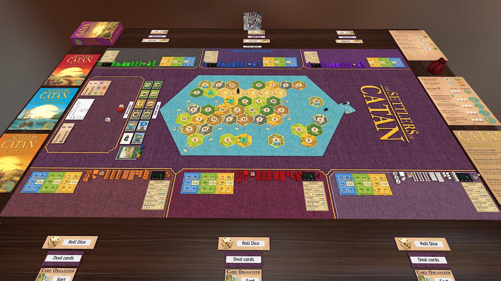
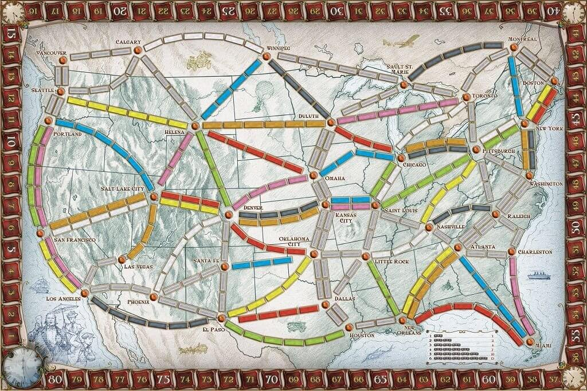

Prosta gra polegająca na symulowaniu różnych gier planszowych czy też karcianych. W samej grze łatwo
stworzyć/dodać różne gry oraz je oskryptować, automatyzując niektóre elementy rozgrywki jak np.
podliczanie punktów, rozstawianie początkowe planszy, rozdawanie kart w blackjack'u itd. Dlatego też wykorzystując
pasję oraz chęć podszkoleniu się w LUA wykorzystałem tę sytuację pisząc skrypty do tej gry.
The Settlers of the Catan
Pierwszą rzeczą którą zrobiłem w tej grze było naprawienie błędu porzuconego już projektu gry Catan.
W ten sposób nauczyłem się jak działa importowanie i automatyzowanie gier planszowych.
Po jego naprawieniu przeszedłem do dalszego automatyzowania planszówki, a w szczególności automatyzowanie dodatków
do tej gry.

Tickets to Ride
Jest to mój aktualny projekt który stara się zaimportować i zautomatyzować grę planszową Tickets to Ride.
W momencie pisania tego tesktu jest zrobione automatyczne rozdawanie kart, a aktualnie trudzę się z automatycznym
liczeniem punktów.
